Halo, Kawan Digital!
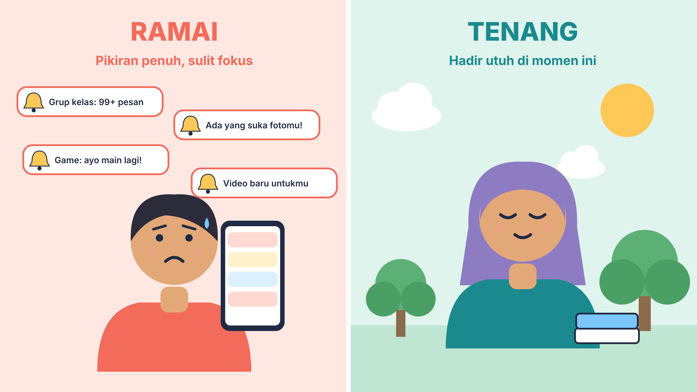
Pernah tidak, kamu membuka HP hanya untuk membalas satu pesan, lalu tahu-tahu sudah satu jam berlalu? Atau tubuhmu sudah lelah, tetapi jarimu masih terus menggulir layar?
Tenang, kamu tidak sendirian. Hampir semua orang pernah mengalaminya. Kabar baiknya, ada keterampilan yang bisa dilatih supaya kita yang memegang kendali, bukan HP. Namanya mindfulness atau kesadaran penuh.
1. Apa Sih Mindfulness Itu?
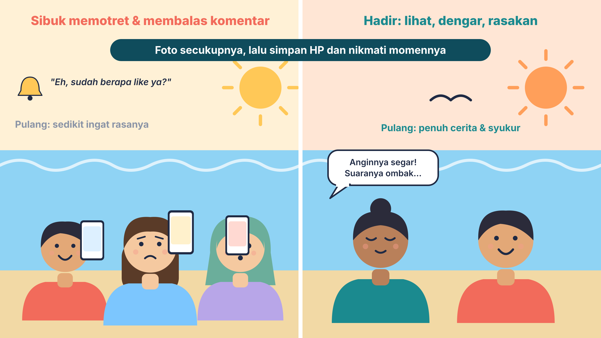
Mindfulness adalah kemampuan untuk hadir sepenuhnya: sadar kita sedang di mana, sedang apa, dan sedang merasakan apa, tanpa terlalu cepat bereaksi terhadap hal-hal di sekitar kita. Di dunia digital, artinya kita bisa berpikir jernih dan tidak terburu-buru saat memakai teknologi.
Bayangkan kamu jalan-jalan ke pantai di Tarakan yang sedang ramai. Banyak orang sibuk memotret dan membagikan foto. Itu wajar kok! Tetapi kalau kamu juga merasakan angin yang segar, mendengar suara ombak, dan bersyukur atas indahnya alam, kamu sedang mindful.
| Mindful | Mindless (tanpa sadar) |
|---|---|
| Tahu untuk apa membuka aplikasi | Membuka aplikasi karena kebiasaan |
| Sadar berapa lama dan bagaimana perasaan | Menggulir sampai lupa waktu |
| Bisa berhenti saat sudah cukup | Sulit berhenti walau sudah lelah |
2. Tiga Langkah Dasar: IAA
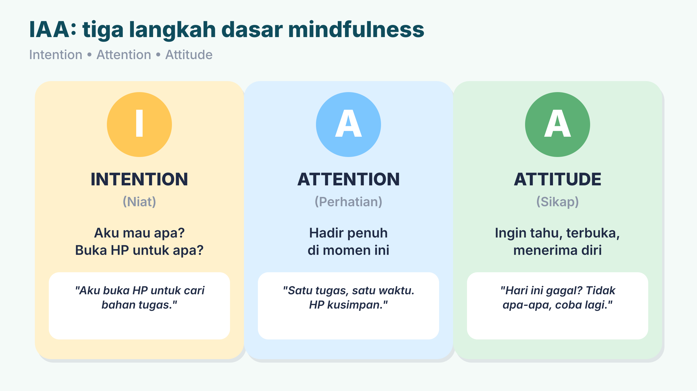
Untuk memulai latihan mindfulness, ada tiga langkah dasar yang disebut IAA:
- Intention (niat). Niat dari dalam diri untuk menjadi lebih baik dan lebih bijak. Contoh: sebelum membuka aplikasi, tanya dirimu, "Aku mau apa, ya? Berapa lama?"
- Attention (perhatian). Melatih diri untuk hadir penuh, fisik dan pikiran, pada apa yang sedang dikerjakan, tanpa terganggu pikiran lain. Contoh: satu tugas dulu, HP disimpan.
- Attitude (sikap). Sikap terbuka, ingin tahu, dan menerima diri. Contoh: hari ini lupa batas waktu? Tidak apa-apa. Kita belajar dari kejadian itu dan mencoba lagi besok.
3. Kenapa Otak Butuh Jeda?
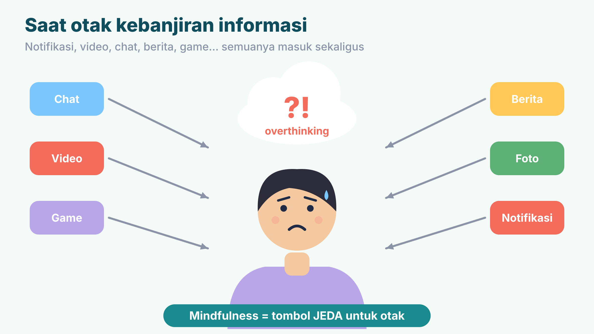
Pernahkah kamu merasa overthinking, yaitu pikiran terus berputar dan sulit tenang? Salah satu penyebabnya adalah terlalu banyak informasi yang masuk sekaligus. Akibatnya kita sulit berpikir jernih, sulit memutuskan sesuatu, mudah bereaksi berlebihan, dan merasa lelah.
Beberapa pemicu yang sering terjadi pada teman-teman seusiamu:
- Notifikasi yang terus bunyi dan memecah fokus.
- Multitasking: belajar sambil membuka banyak aplikasi.
- Gim yang membuat waktu tidur bergeser.
- Membandingkan diri dengan unggahan orang lain.
Mindfulness adalah tombol JEDA untuk otak. Ia memberi waktu bagi otak untuk beristirahat sehingga kita lebih tenang dan bijak menghadapi arus informasi.
4. Kenali Sinyal dari Tubuh dan Pikiranmu
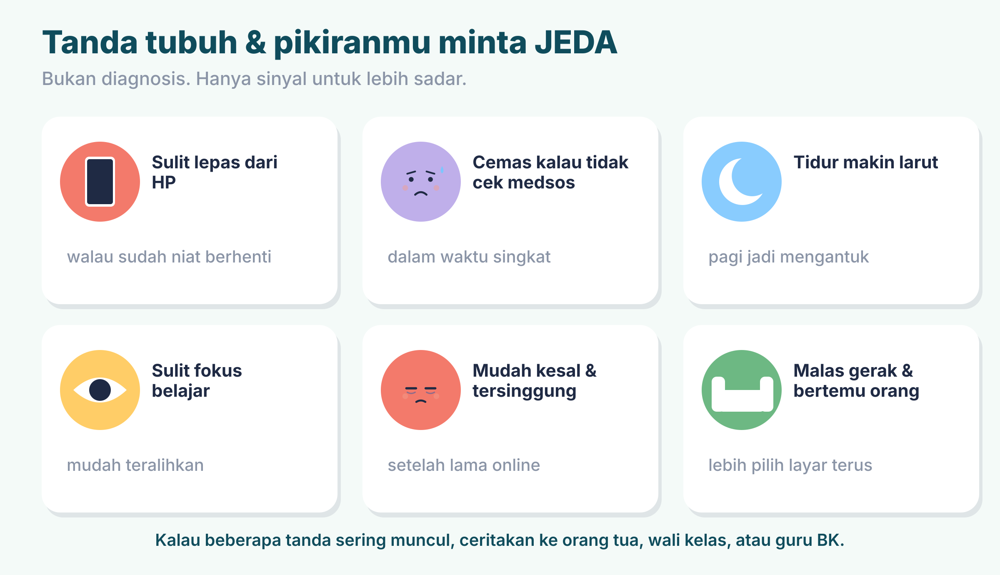
Tubuh dan pikiranmu sering memberi sinyal saat butuh jeda. Misalnya sulit lepas dari HP walau sudah berniat berhenti, cemas bila tidak membuka media sosial, tidur makin larut, sulit fokus, mudah kesal, atau malas bergerak dan bertemu orang.
5. Seimbang, Bukan Anti-Teknologi
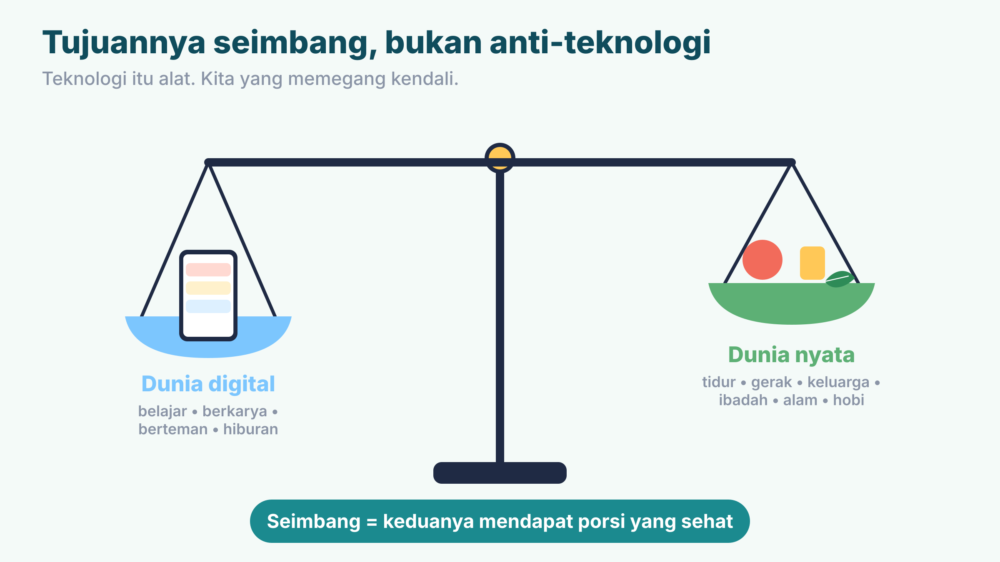
Mindfulness tidak menyuruhmu membuang HP. Teknologi punya banyak manfaat: menambah wawasan, menjalin pertemanan, menyalurkan kreativitas, bahkan membantu mengelola stres. Yang kita jaga adalah keseimbangannya.
Gambar roda di bawah ini membantumu melihat apakah semua bagian hidupmu "terisi".
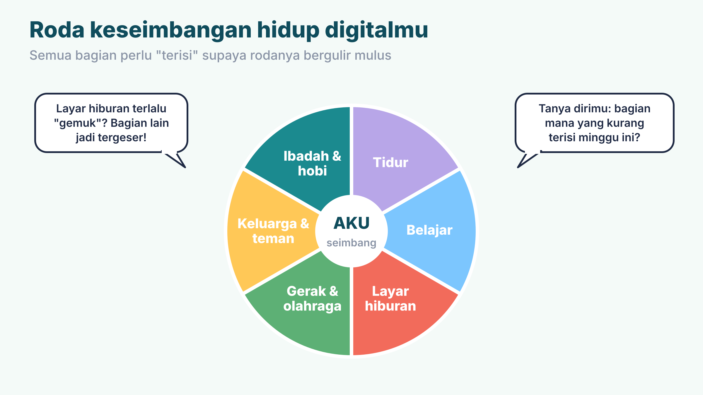
6. Jurus 1: Teknik JEDA
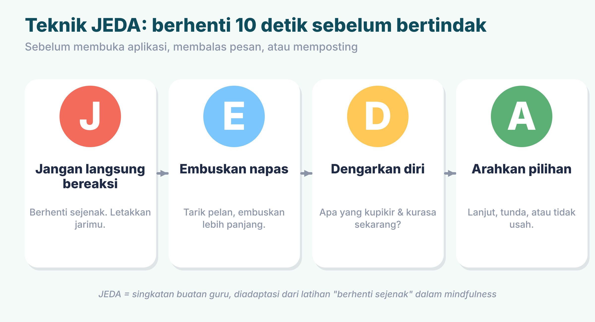
Sebelum membuka aplikasi, membalas pesan yang membuatmu kesal, atau memposting sesuatu, lakukan JEDA:
- J - Jangan langsung bereaksi. Berhenti sejenak.
- E - Embuskan napas. Tarik pelan, embuskan lebih panjang.
- D - Dengarkan dirimu. Aku sedang pikir dan rasa apa?
- A - Arahkan pilihan. Lanjut, tunda, atau tidak usah.
JEDA adalah singkatan buatan gurumu, diadaptasi dari latihan "berhenti sejenak" dalam mindfulness. Bukan istilah baku.
7. Jurus 2: Napas Sadar
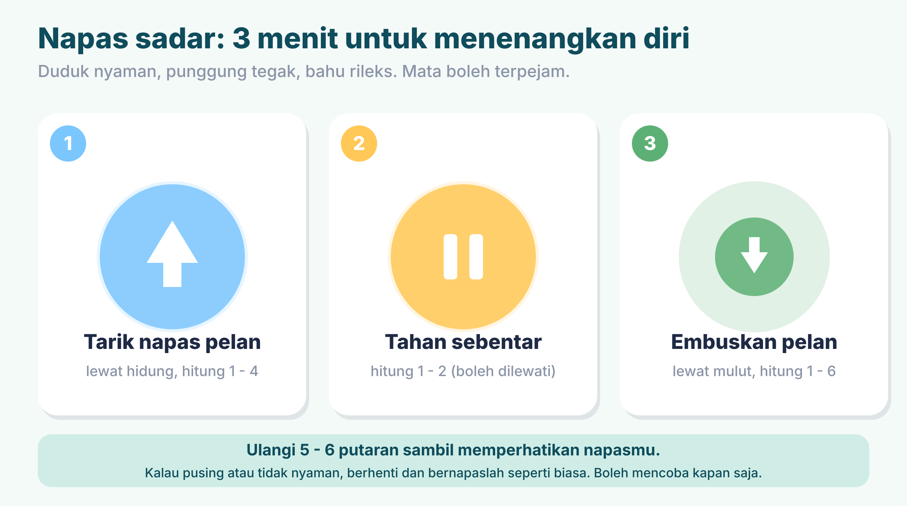
- Duduk nyaman, punggung tegak, bahu rileks. Mata boleh terpejam.
- Tarik napas pelan lewat hidung (hitung 1-4).
- Tahan sebentar (hitung 1-2). Boleh dilewati.
- Embuskan pelan lewat mulut (hitung 1-6).
- Ulangi 5-6 putaran sambil memperhatikan napasmu.
8. Jurus 3: Latihan 5-4-3-2-1
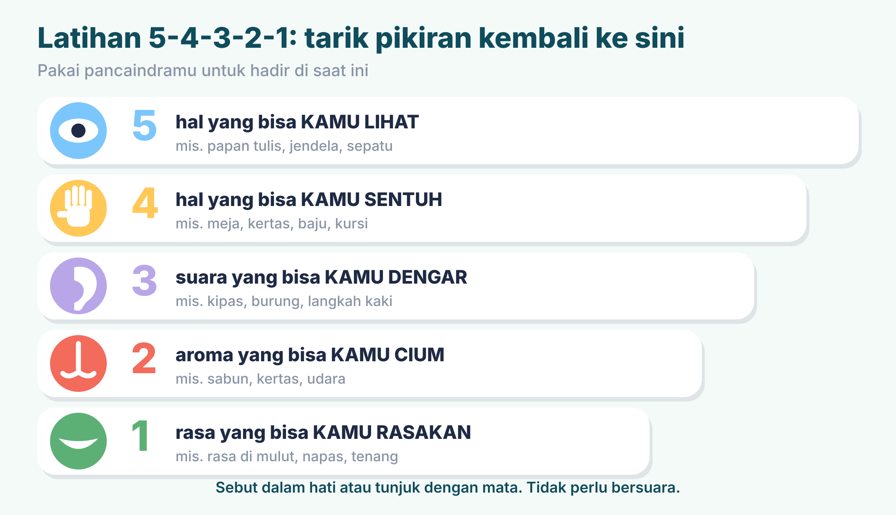
Saat pikiranmu terasa penuh, bawalah perhatianmu kembali ke saat ini. Sebutkan dalam hati: 5 hal yang kamu lihat, 4 hal yang kamu sentuh, 3 suara yang kamu dengar, 2 aroma yang kamu cium, dan 1 rasa atau napas yang kamu rasakan.
Latihan ini sangat membantu saat kamu mulai cemas atau overthinking, dan tidak butuh alat apa pun.
9. Jurus 4: Satu Tugas, Satu Waktu
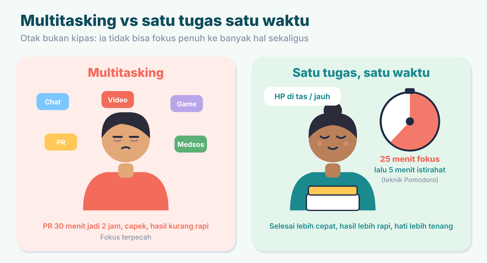
Belajar sambil membuka lima aplikasi terasa seperti melakukan banyak hal, tetapi sebenarnya perhatianmu berpindah-pindah. Hasilnya, tugas 30 menit bisa jadi 2 jam dan kamu lebih lelah.
Coba teknik Pomodoro: fokus penuh selama 25 menit, lalu istirahat 5 menit. HP disimpan jauh dari tanganmu selama sesi fokus.
10. Jurus 5: Kendalikan Notifikasi
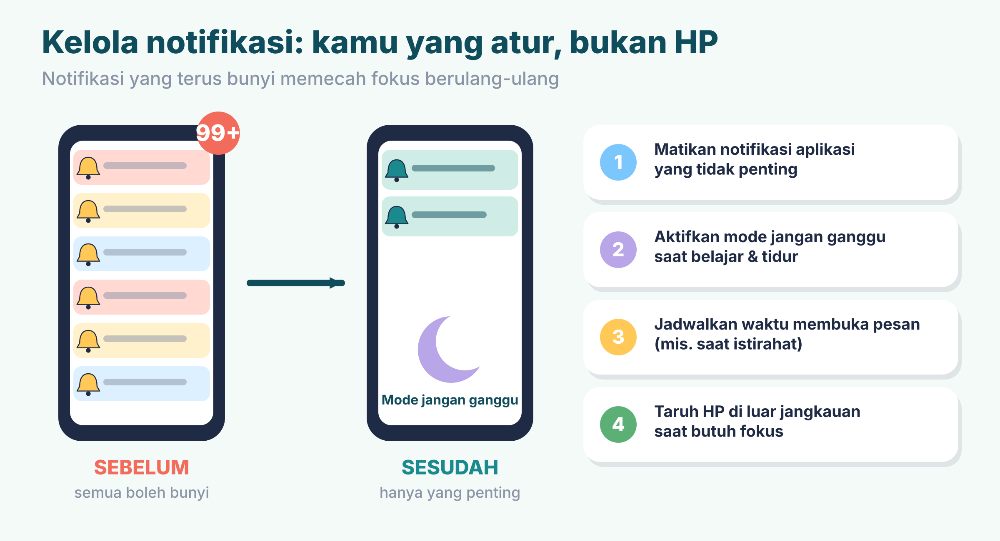
- Matikan notifikasi aplikasi yang tidak penting.
- Aktifkan mode jangan ganggu saat belajar dan tidur.
- Jadwalkan waktu membuka pesan, misalnya saat istirahat.
- Taruh HP di luar jangkauan saat butuh fokus.
11. Jurus 6: Pilih Konten Positif dan Detoks Mini
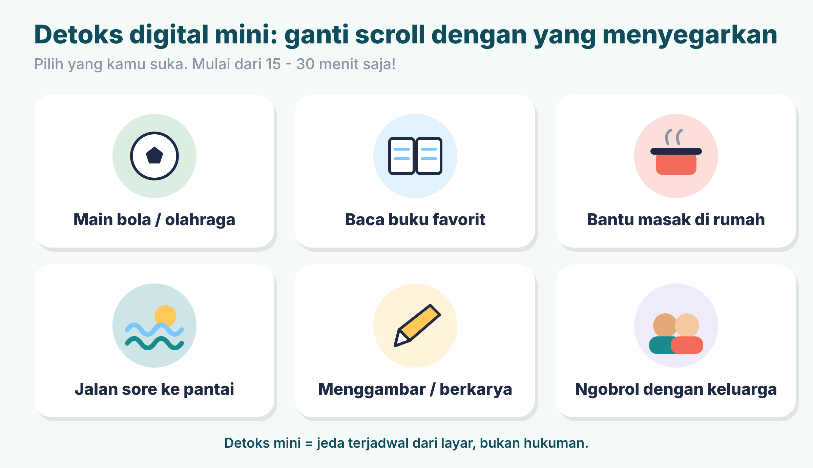
Konten positif adalah konten yang bermanfaat, seperti video pelajaran, tips belajar, kisah inspiratif, dan hiburan yang sehat. Beberapa langkah memilihnya:
- Rapikan beranda: bisukan atau berhenti mengikuti akun yang membuatmu merasa minder atau tidak nyaman.
- Periksa dulu sebelum membagikan: bermanfaat? tidak menyakiti? benar?
- Ingat bahwa unggahan orang lain biasanya sorotan terbaik mereka, bukan seluruh hidupnya.
Detoks digital mini artinya jeda terjadwal dari layar, misalnya saat makan bersama atau satu jam sebelum tidur. Isi jeda itu dengan kegiatan yang kamu suka.
12. Empat Pilar Pola Hidup Sehat
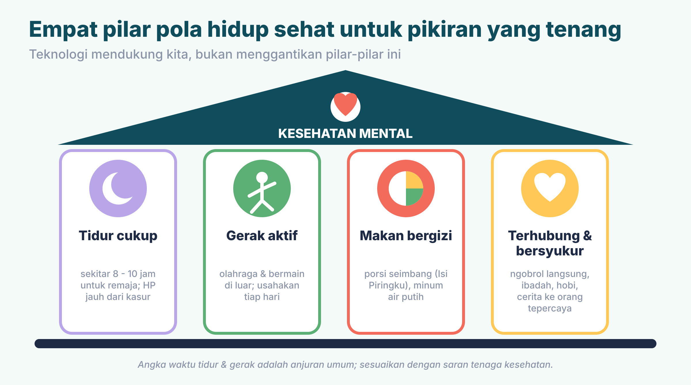
- Tidur cukup. Remaja umumnya butuh sekitar 8-10 jam tidur. Jauhkan HP dari kasur.
- Gerak aktif. Bermain di luar atau berolahraga hampir setiap hari.
- Makan bergizi. Pilih makanan seimbang dan minum air putih.
- Terhubung dan bersyukur. Ngobrol langsung, ibadah, hobi, dan bercerita kepada orang yang kamu percaya.
Angka waktu tidur adalah anjuran umum. Sesuaikan dengan saran tenaga kesehatan.
13. Saatnya Menyusun RHDS
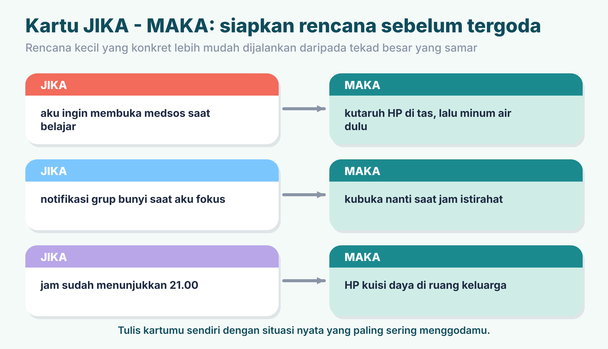
Rencana Hidup Digital Seimbang (RHDS) adalah rencana pribadimu. Isinya: niat, tiga aturan layar yang jelas, konten positif yang kamu pilih, kegiatan pengganti, empat pilar pola hidup sehat, dan tiga kartu JIKA-MAKA.
Kartu JIKA-MAKA membuatmu siap sebelum tergoda. Rencana yang spesifik (kapan, di mana, berapa lama) lebih mudah dijalankan daripada tekad yang samar.
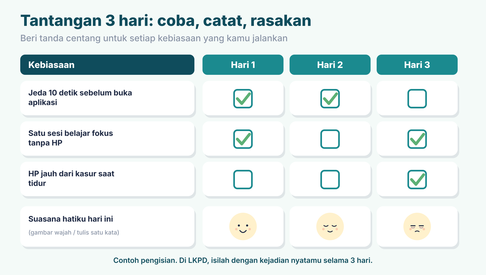
14. Ruang Aman Kita
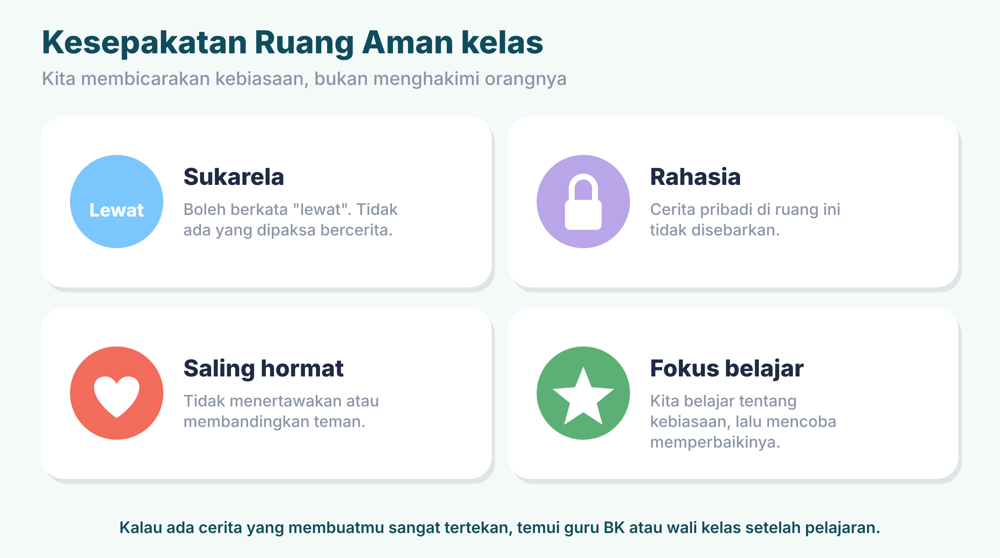
Selama belajar tentang kebiasaan digital, kita menjaga kesepakatan: sukarela, rahasia, saling hormat, dan fokus belajar. Kita membicarakan kebiasaan, bukan menghakimi orangnya.
Cek Pemahaman
Pilih jawabanmu. Hasilnya langsung muncul. Boleh mengulang.
Rangkuman
- Mindfulness adalah kesadaran penuh: hadir pada apa yang dipikirkan, dirasakan, dan dilakukan saat ini.
- IAA: Intention (niat), Attention (perhatian), Attitude (sikap).
- Tujuannya seimbang, bukan anti-teknologi.
- Tiga latihan: JEDA, napas sadar, 5-4-3-2-1.
- Jurus tambahan: satu tugas satu waktu, kendalikan notifikasi, pilih konten positif, detoks mini.
- Empat pilar sehat: tidur, gerak, makan bergizi, terhubung dan bersyukur.
- Buat RHDS dan jalankan tantangan 3 hari. Bila terasa berat, ceritakan kepada orang yang kamu percaya.
Ayo, Refleksi!
Jawabanmu pribadi dan hanya tersimpan di layar ini (hilang saat halaman ditutup). Tulis di buku catatan juga, ya.
1. Aktivitas apa yang sering membuatmu menikmati momen secara mindfulness? Boleh hobi, aktivitas, atau hal tertentu.
2. Apa saja langkah terbaik untuk menikmati momen dan hadir sepenuhnya pada situasi tersebut?
3. Apakah langkah-langkah itu bisa diterapkan pada aktivitas lain? Berikan contoh.
4. Menurutmu, apakah mindfulness dapat membuat kesehatan mental kita makin baik? Jelaskan alasanmu.
Kata Kunci
| Istilah | Artinya |
|---|---|
| Mindfulness | Kesadaran penuh: hadir sepenuhnya pada apa yang dipikirkan, dirasakan, dan dilakukan saat ini, tanpa terlalu reaktif. |
| Intention | Niat atau tujuan sebelum bertindak. |
| Attention | Perhatian penuh pada momen dan tugas yang sedang dijalani. |
| Attitude | Sikap terbuka, ingin tahu, dan menerima diri. |
| Overthinking | Terlalu banyak memikirkan sesuatu sampai sulit tenang dan sulit mengambil keputusan. |
| Mindless scrolling | Menggulir layar secara otomatis tanpa tujuan dan tanpa sadar waktu. |
| Multitasking | Mengerjakan banyak hal sekaligus; sering membuat fokus terpecah. |
| Notifikasi | Pemberitahuan dari aplikasi di gawai. |
| Detoks digital | Jeda terencana dari penggunaan perangkat digital. |
| Screen time | Lamanya waktu menatap layar gawai. |
| Pomodoro | Teknik belajar: fokus 25 menit lalu istirahat 5 menit. |
| Konten positif | Konten yang memberi manfaat: edukasi, inspiratif, hiburan sehat. |
| JEDA | Teknik buatan guru: Jangan langsung bereaksi, Embuskan napas, Dengarkan diri, Arahkan pilihan. |
| RHDS | Rencana Hidup Digital Seimbang: rencana pribadi yang disusun siswa pada pertemuan ini. |